Abstract
A diverse set of N-methyl secondary amines are obtained in high yields by an expedient reductive alkylation of commercially available methanolic methylamine.
Scheme 1.
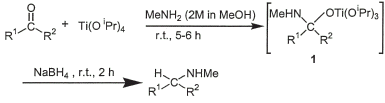Amines and their derivatives are proven synthetic targets because of their versatile applications1. A recent report2 claims that about 25% of the registered drugs are based on amines. In connection with our ongoing studies3 on reductive amination reactions4, we have earlier described5 a method for the preparation of N-methyl secondary amines by reductive amination of carbonyl compounds using a combination of titanium(IV)isopropoxide and sodium borohydride. A mixture of methylamine hydrochloride and triethylamine has been employed as the source of nucleophilic methylamine. The method conveniently avoids the use of gaseous methylamine, however, the overall reaction was slow.
Table 1.
Synthesis of N-methylamine.
| Entry | Carbonyl compound | Product aminea | Yieldb |
1 |
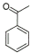 | 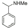 | 85% |
2 |
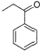 | 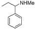 | 88% |
3 |
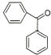 | 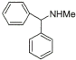 | 70% |
4 |
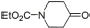 | 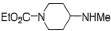 | 95% |
5 |
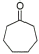 | 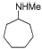 | 82% |
6 |
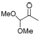 | 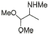 | 85% |
7 |
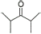 | 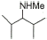 | 80% |
8 |
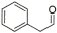 | 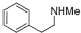 | 88% |
9 |
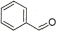 |  |
92% |
10 |
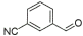 | 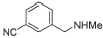 | 90% |
11 |
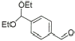 | 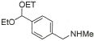 | 92% |
12 |
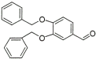 | 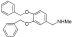 | 93% |
13 |
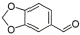 | 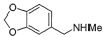 | 90% |
14 |
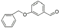 | 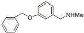 | 90% |
15 |
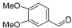 | 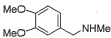 | 88% |
16 |
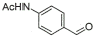 | 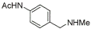 | 92% |
aThe products were characterized by comparison of
their NMR and GC-MS spectrums with reported5 data.
bYields are of isolated and pure products.
As a sequel to this work, we reasoned that a more convenient transformation might be achieved using a commercially available solution of methylamine in methanol. We report herein the results of this investigation leading to a rapid, high-yielding protocol for the preparation of N-methyl secondary amines. The efficacy of the protocol has been evaluated on a varied set of carbonyl compounds and the results were compared with our reported5 data. The starting aldehydes and ketones were reacted with a commercially available methanol solution of methylamine (2 M) for 5–6 h in the presence of titanium(IV)isopropoxide, followed by the addition of solid sodium borohydride. The reaction mixture was allowed to stir for a further period of 2 h and quenched with water. The reaction is possibly proceeding through the formation of the titanium(IV)complex 1 (Scheme 1) as an intermediate5, which is reduced either directly or via transient iminium species. Titanium(IV)isopropoxide has been utilized5,6 as a mild reagent compatible with a variety of potentially acid-sensitive functional groups that include acetal, lactam, acetonide and tert-butyldimethylsilyl ether.
The results are collated in the Table 1. The carbonyl substrates used in this study contained a number of other functional groups such as chloro, methoxy, cyano, nitro, and urethane. In the case of the N-methylamines derived from aldehydes, the pure products were isolated by simple diethyl ether extraction. For the products derived from ketonic substrates, the crude N-methyl amines were extracted with hydrochloric acid (2 M) to separate the neutral materials. Unlike many reported reductive amination4 protocols, the present method works well with enolizable carbonyl compounds. The neutral nonaqueous reaction conditions, simple isolation of the products with high yields, and the convenient use of a commercially available solution of methylamine are the notable features of the present method. This protocol should provide an easy access to other amines bearing functionalized motifs due to the compatibility of titanium(IV) isopropoxide with a variety of acid-sensitive functional groups.
In summary, an expedient, high throughput access to various N-methyl secondary amines is reported via reductive amination of carbonyl compounds with a commercially available solution of methylamine in methanol using titanium(IV)isopropoxide and sodium borohydride.
Experimental
General Procedure for the Reductive Amination of Aldehydes with Methylamine
Titanium(IV)isopropoxide (2 mL, 6.6 mmol) was added to a commercially available solution of methylamine in methanol (2 M, 7.5 mL) followed by the addition of the starting aldehyde (5 mmol). The reaction mixture was stirred at ambient temperature for 5 h, after which sodium borohydride (0.2 g, 5 mmol) was added and the resulting mixture was further stirred for another period of 2 h. The reaction was then quenched by the addition of water (1 mL), the resulting inorganic precipitate was filtered and washed with diethyl ether (20 mL). The organic layer was separated and the aqueous part was further extracted with diethyl ether (2×20 mL). The combined ether extracts were dried (K2CO3) and concentrated in vacuo to give N-methyl secondary amines in high purity.
General Procedure for the Reductive Amination of Ketones with Methylamine
For the reductive amination of ketones, the same general procedure was used except that the combined diethyl ether extracts were next extracted with hydrochloric acid (2 M, 2×10 mL) to separate the neutral materials. The acidic aqueous solution containing the N-methylated amine hydrochloride salt was made alkaline (pH = 10) by slow addition of (10%, w/v) aqueous NaOH and extracted with diethyl ether (2×20 mL). The combined organic extracts were dried (K2CO3) and concentrated in vacuo to give pure N-methylated alkylamines.